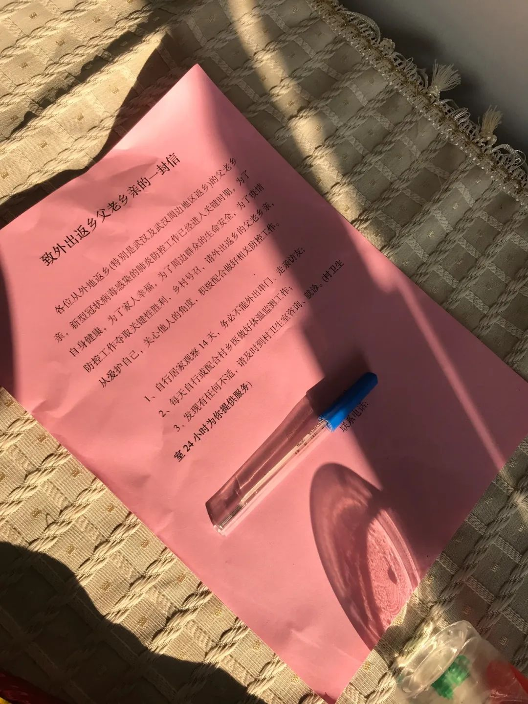

武汉疫情调查追踪：医护感染应受关注
原文链接 备份链接 【财新网】（记者 张帆）2月3日，首都医科大学附属复兴医院心内科重症监护室出现聚集性病例，确诊9例，其中医护人员5例。北京第一时间披露了相关情况。西城区副区长缪剑虹介绍称，目前相关人员已经转到定点医院治疗，以轻症为 …

我是一个江苏人，在北京上班，在武汉买个房子，娶了个湖北媳妇。我和媳妇很早前就商量好春节在两家轮流过，今年，刚好轮到去黄冈的丈母娘家。
我们从北京坐Z53到武汉，再从宏碁汽车客运站转大巴到黄冈浠水县媳妇家里，已经是1月21日中午11点。当时，我的朋友圈里，大家对武汉疫情的讨论已经热火朝天，而在距离武汉不到100公里的浠水县城，超市里人满为患，路上戴口罩的人寥寥无几，人们并未意识到一场危机即将到来。此时，距离黄冈封城，不到三天。
我被困在了湖北疫情最严重的区域之一，成了朋友们不断问候的“灾民”。阴差阳错，又成了中国红十字基金会字节跳动医务工作者人道救助基金的一名志愿者，问候一线医务人员，帮他们提交申请材料。通过电话，了解疫情最一线的消息，倾听医生们的叹息、无助、坚强和希望。
**人生第一次被警察问询
**
先来介绍一下我的工作。
我参与的这个基金是今日头条和抖音母公司字节跳动捐赠2亿元设立的，旨在为参与疫情防控的医务工作者提供保障。截至目前，加上员工捐赠、其他企业捐赠等，基金总额将增至3.91亿元。感染新冠肺炎的医务人员可以获得10万元资助；不幸离世的话，医护人员家庭可以获得100万元的资助。
申请流程非常简单。被感染的医护人员本人、亲属或者同事，可以通过网上公布的申请链接或者申请邮箱提交材料。我们志愿者联系申请人核实、协助他们完善申请材料提交基金管委会审核，审核通过后便会拨款。
每天早上，我都会拿到一份申请基金的医务人员名单，随后需要逐一电话沟通：确认是否做了核酸检测，是否确诊，申报材料是否完整等。
其实，我接到这个任务时，已经是2月3日。项目已经运转了一个多礼拜了。1月31日凌晨，世界卫生组织宣布，将新型冠状病毒疫情列为国际关注的突发公共卫生事件，随后西藏也确诊首例新冠肺炎病例，疫情蔓延至全国所有省区市。
每天来申请基金的医务人员也逐渐增多。最早加入的五六个志愿者已经从大年初一连续加班一周多了，他们急需支援。刚好，我自己的工作受疫情影响取消了，人又困在黄冈，便加入了。
作为一个社恐的互联网人，每个月打电话不超过十分钟的我，其实十分拒绝打电话这个事情的。所以培训时问的第一个问题就是：为什么非得打电话确认呢？直接在网上提交资料审核就行了呗。
为什么非得先打一遍电话确认呢？因为很多人提交的信息不完整，可能会影响他们申请基金的成功率。另外，还有一些人，并没感染，只是想了解一下这是个什么基金；还有一部分纯属恶作剧，比如有人留下了刘德华的名字，只想看看这是不是真的……我们的工作其实就是初步审核。
当然，即便是真正被感染的医护人员，自己亲手填了申请表，一个陌生电话打过去就要人家微信，人家可能也会觉得你是傻帽。
这些天，我遇到过打过去不问缘由直接挂断的，电话不接短信不回的，居然，还有报警的。
事情要从2月5日下午3点02分讲起。我给湖北省第三人民医院的护士杨童打了电话，想确认下她提交的资料。
于是，产生了如下对话：
－您好，我是中国红十字基金会字节跳动医务工作者人道救助基金志愿者。
－你是骗子吧？
－我真的是志愿者。您还记得吗？昨天您提交了一份申请表。
－没听过字节跳动，和抖音什么关系？
－ 是母公司，今日头条和抖音都是字节跳动推出的产品。
－ 哦。
－ 根据您填的信息，想再跟您确认一下，您的核酸检测结果是阳性对吗？
－ 是的。
似乎我的解释得到了认可。我也如愿加上了她的微信（方便后续补充材料）。
很快，我又收到她发来的信息：“你们真的不是骗子？”
我也是第一次做“骗子”，确实不知道怎么证明我的志愿者身份，只能把红基会官网的链接、媒体报道和之前基金的公示信息发了过去。然后，没有然后了。

（向杨童护士证明我不是骗子）
我不放心，既然她确实感染了，并且也申请了，不能在我这一环就失去这次被资助的机会。我又找了她同家医院的护士，希望能帮我证实一下身份。只可惜，她们不认识。（后来证实，她们彼此认识，只是另一位护士也不信任我。）
2月6日晚11点11分。三十多岁的我，第一次接到了警察的电话。一个来自武汉的严肃的声音：“您好，我这里是武汉XX区派出所的（没听清，我都准备睡觉了），这边有个医生报警，说你是什么基金的志愿者，你们这是什么基金？”
我解释了一通。
最后警察说，他知道了，他会核实，可能还会再找我，希望我电话保持畅通。
挂了电话，媳妇和我开玩笑说，什么人报的警？你这好人做成骗子了，要不是躲在黄冈乡下，警察估计直接来把你带走了。
第二天，警察没来，电话也没来，最有报警嫌疑的杨童来找我了。她1月25日确诊，当时已经重症隔离治疗两周了。她承认是她报的警。当然，我还是“不计前嫌”帮她提交了材料。她和同事们后来也都拿到了资助。
其实我也理解这种不信任的状态吧。这场疫情是一场国难，有人在前线奋战，有人在后方发国难财。医生和护士面对芜杂的信息，有人要给他们资助，有人要给他们买保险，也有拿着噱头的骗子……换谁都会不知所措，质疑、报警、采取特殊办法，不过都是想自我保护。
我见过有医生可能被骚扰电话打烦了，电话打过去，没等我开口，我就遭遇了一连串反问：“哪个单位的？工号是多少？一天到晚打不累啊。”
有医生直接在朋友圈写下：从住院开始到现在，每天接到的电话都是三个问题：“你是xx吗？”“你查过核酸了吗？”“你现在的家庭住址是哪里？”
还有人质疑，我们基金的申请邮箱后缀是crcf.org.cn（实际上是红基会官网域名），“骗子的服务器一般都在国外。”
还有一个医院的护士，拉了他们科室五个人一起来找我。她的一些同事此前已经有其他志愿者在对接了。我问，为什么非要都来找我。答案让我哭笑不得：他们几个同事达成共识，就找一个志愿者提交资料，要是被骗了，可以让警察集中精力抓这一个人。
信任是可以被消耗的，但也可以累积的。我只能做好我的份内事，让更多的医生护士信任我，我再去帮助更多他们的同事。
最难的一关，盖章
过了医护自己这道关，还有一道印章关。
其实，基金的申请资料很简单。就三项：申请书、身份证复印件和确诊证明材料。身份证复印件都是现成的，确诊证明材料可以是核酸检测结果、肺部CT检查结果或者医院的诊断证明，也比较简单。
最难的是申请书，为了确认医务人员确实是在疫情防控一线工作中被感染，需要医院盖章确认。这个章难倒了不少人。尤其是武汉疫情比较严重的几家医院。
比如一直备受关注的武汉A医院和B医院，因为他们是最早一批被武汉市卫健委确定为发热患者定点诊疗医院的。因为处在一线，前期又医疗物资缺乏，防护不到位，出现了大量医务人员感染的情况，所以申报资助的人也很多。
（电脑里存满了医务人员的申报资料）
就在我们公示了几批之后，A医院的医生联系我们，说医院压力比较大，不给盖章了。同样的，B医院一开始就卡着盖章，武汉封城一两个礼拜之后才松口。
从这场疫情有苗头开始，医院好像就变成了某些机构羞于启齿的伤疤。医护人员被感染的数字迟迟不愿对外公布。也能理解，这个数字大了，被公开不好看，就只能遮遮掩掩。
其实，我觉得，在这场战役中，医务人员被感染，是医院防护不到位，是不幸，但也是他们救死扶伤的功勋章。遗憾的是，这种荣耀和勋章，抵不过一枚印章。
直到2月13日，湖北、武汉双双“换将”；而后，全国医务人员的感染情况被披露。这时候，医务人员感染似乎才变得不那么敏感，医院的章也好盖了。
而此时，全国已经有3019名医务人员感染新型冠状病毒。
暴哭的姑娘、不要资助的大叔和我的牵挂
这些天，也留下了一些温暖的片段。
武汉市第七医院的一个叫田梓的护士，在聊天时跟我说，当时疫情发展迅速，爸爸坚决不让她上一线。但她没听，后来确诊感染。
打电话通知父母这个消息时，妈妈告诉她，爸爸眼睛红了。这个22岁的年轻姑娘突然暴哭，22年了，她重新确认了爸爸对她的爱：“以前觉得爸爸更爱弟弟，原来我也是他的宝贝。”

（田梓目前仍在医院接受治疗）
还有一位徐医生。我在电话中和他确认了基本信息后，他问我，收款的银行账号是否可以填医院的账号。
我以为之前被当成骗子的戏码又要上演了，正想解释，这个基金是针对医护人员个人的资助。没等我开口，徐医生说：“我是想申请到了以后，把这笔钱捐给我们医院。我不想让人知道是我，您看是否可以？如果不行，我就不申请了。”
那一刻，我觉得我在仰望他。
2月23日，我接连看到武汉29岁女医生夏思思和湖北孝感黄文军医生因新冠肺炎离世的消息。我又想到我联系过的那些医生，他们现在怎么样了？
有两位医生，他们的声音，我一直记得。
一位声音听起来有些苍老。苍老，可能在她作为医生时，代表着经验丰富医术高明，但作为新冠肺炎患者时，却让我担心。这位段医生连微信都不会操作，申请资料最后还是让科室里一位年轻人帮忙的（因为种种原因，申请材料到现在也没交全）。
还有一位四十来岁的医生。电话那头，他嗓子里传出的声音就像拉风箱，感觉呼吸非常不顺畅，说不了几个字就忍不住咳嗽。我不忍心让他继续说话，只能通过打字沟通。基金资助他后，我也没有再去打扰他。但我永远忘不了他那无法用形容词形容的声音。他应该已经康复了吧。
**分裂感
**
我联系的医生中，除了武汉一些医院的，也有很多来自黄冈。相比武汉的医生，和黄冈的医生沟通，就更容易一些。因为我人就在黄冈，可以发位置定位给他们，会和他们聊黄冈的疫情和防护。
作为一个在北京工作的互联网人，我大部分信息获取都在网络上，21日回到黄冈后，我一直有种不真实的分裂感。
一边是网上汹涌的疫情信息，我朋友圈里那些在北京、上海、苏州的朋友，质疑相关部门疫情防控不力，疯狂囤口罩、消毒液。
当我关掉朋友圈，站在黄冈下面的小县城里，街边纽百伦鞋店里公放着刘德华的《恭喜发财》，隔壁杰克琼斯服装店播着卓依婷的《财神来到我家门》……
1月22日，我们打车带一家人回乡下老屋过年时，没戴口罩的女司机还咕哝了一句：“不是有传染病了吗？这路上怎么还这么多人？”
印象中，直到2月3日，农村这边才开始重视疫情防控工作。而截至这天，湖北省累计报告新冠肺炎病例已经有13522例，其中黄冈市就有1422例，疫情严重程度仅次于武汉。
这天，我们收到了一份《致外出返乡父老乡亲的一封信》和一支体温计；之后的几天，村里陆续来家里消毒、登记外来人员；县城里的社区也打来了多个核查电话；我们在武汉的房子所在的社区、物业、公安以及行政中心智能助理等也打来了核查、提醒的电话……

（村里发给每家的宣传页和体温计）
我们从武汉回到村里的第14天，武汉封城的第12天，这种分裂感终于消失了——
乡亲们也开始关心每天更新的疫情数字，担心隔壁邻居家门口停的鄂A牌照的车，想尽各种办法囤积生活物品，也期待着这场疫情早点过去，回归正常生活……
一天，我在朋友圈里看到一位护士发了一条抖音。视频里的她躺在病床上，配文：“待到春暖花开，我们一起相约武汉看樱花。”
最近几天，湖北新冠肺炎新增确诊病例数持续在下降，全国多个省区市确诊病例连续多日零新增。天也渐渐暖了，相信在武汉樱花繁盛的时节之前，疫情一定可以结束。
有志愿者跟我说，接触和回访多了，就会发现我们的医生护士们特别可爱可敬。
是啊。阴霾和病毒都会过去，这些可爱可敬的人会一直在。
（为保护基金受助人隐私，文中医务工作者均为化名。）
推荐阅读


严正声明：“商业人物”所有原创文章，转载均须获授权。一切形式非法转载，包括但不限于盗转、未获“商业人物”授权通过第三方转载行为，均属侵权行为，“商业人物”将公布“黑名单”并追究法律责任。“商业人物”只愿与尊重知识产权的机构合作。
投稿、约访、合作，联系邮箱：bizleaders@qq.com
添加微信biz-leader，获转载授权或邀您加入商友群
1.长按右侧二维码即可关注***。*
2.期待您置顶与星标。欢迎分享与评论，欢迎通过留言或私信方式给我们提供选题线索。
3.点击“阅读原文”，看商业人物官网，获取更多精彩内容。**

原文链接 备份链接 【财新网】（记者 张帆）2月3日，首都医科大学附属复兴医院心内科重症监护室出现聚集性病例，确诊9例，其中医护人员5例。北京第一时间披露了相关情况。西城区副区长缪剑虹介绍称，目前相关人员已经转到定点医院治疗，以轻症为 …
原文链接 备份链接 二月初七（2月29日）。 天又晴了。阴阴晴晴，有点像我的封城日记，开开封封。待在家里时间长了，不知以后出去还习惯否。甚至，还愿意出去否。今天邻居唐小禾老师发了一组东湖的照片，像是无人机所拍，说是近日的。空旷而寂静的东 …
原文链接 备份链接 3月3日。 依然天阴，有点冷嗖嗖的。我在郊区的邻居一早发给我照片。留言说，你家的海棠开花了，你的微信文被封了。微信内容被封，我已习惯。但海棠开花却实在让人高兴。去年夏秋，一直大旱。树叶全枯并且掉光，我很担心这棵树会死 …
原文链接 备份链接 以下文章来源于湃客工坊 ，作者镜相工作室 [湃客工坊 澎湃新闻“湃客”创作者平台 | 更宽广的世界，更丰饶的人生](#) 澎湃新闻 湃客镜相 今天，距武汉封城整整一个月。1月23日，这座千万级人口的码头城市落入漩涡，从 …
原文链接 备份链接 我们该从疫情中获取怎样的“抗体”和“免疫力”？1月29日，大年初五，在武汉市汉口解放大道，一位被确诊新冠肺炎的患者正在转院。摄影/长江日报 金思柳 疫情“罗生门”：患者、医者、决策者 《中国慈善家》记者/温如军 吴可 …